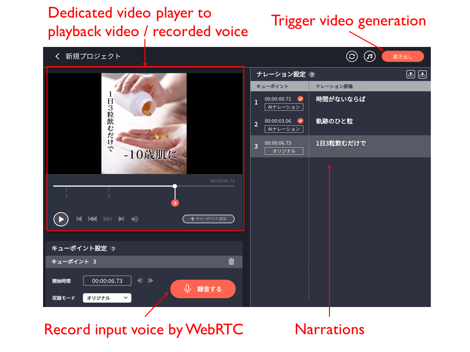
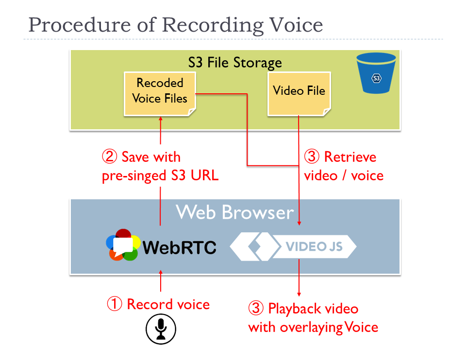

Released Narration Recording Service
Abstract
Some RICHKA users requested that they would like to input their narration into the videos and recently we released a new web application called ナレ撮り which enables users to record the voice as narration on web browsers and combine them with video sources and generate videos. And synthesis of speech technology to automatically generate voice data with the input texts is also supported as AI narration mode and users don't have input voice.
The screenshot below is the sample of the edit page. The upper left is a dedicated video player to playback both a video source and recorded narration with combining them. Users can edit the start time of cues with dragging the cue point on the seek bar. When users click the recording button in the lower left, the input voice is recorded through WebRTC and it is converted to MP3 on the web browsers. The right side is the narration texts users can add/edit. In the AI narration mode, the voices are generated with the texts.
After the recording has been done, users click the generation button in the upper right and it starts to generate a video with combining the video source and the recorded voices.

Development Environment
Web servers are based on Django, and additional 8 Python packages such as Django extensions and boto3 to publish pre-signed S3 URL and WebVTT parser are integrated. The current total lines of Django is around 3000 and it is still quite small because it is still beta version. Regarding the front end, 20 OSS libraries such as jQuery, videojs, videojs marker, RecordRTC etc. are integrated. The current total lines of JavaScript codes is around 4300 and the font end is also still quite small.
This product is still beta, and based on the feedback from users, new advanced features will be continuously added and this project will also become big service soon such as RICHKA. Regarding the synthesis of speech technology, we will make a new post and share the detail.

Voice Recording
One of primary features is to record voice per cue point inputted with the mic. When users click the recording button, the recording processing is executed with using WebRTC as a diagram below.
- A user clicks the recording button and records the voice with mic
- The voice data is retrieved with WebRTC API and converted into MP3 in JavaScript layer. Then it is directly uploaded to S3 with pre-signed S3 URL.
- To enable the user to listen the recorded voice, our dedicated video player on JavaScript layer loads the record and initialize to be ready.
- The user can playback the video source with overlaying the recorded voices without generating a new video on the dedicated video player.

Direct Conversion to MP3 on JavaScript layer
At the 1st step, the MIME type of the audio data retrieved by WebRTC is audio/webm in default and it tended to be large data size and the quality of the voice is a bit higher quality. To adjust the quality and the data size to match our requirements, we decided to use a JavaScript library RecordRTC to directly convert to MP3 on JavaScript layer and upload to S3 without delegating the conversion processing to servers and Lambda. After we obtain the binary of MP3, we don't convert to other formats in the data life cycle. The client processing makes the architecture simpler and doesn't cause any additional load to the server side.
Dedicated video player to sync video and voices
At the 3rd step, we implemented a dedicated video player to playback the video source with overlaying the recorded voices without generating another video. The advantage is users can immediately check the recording results without waiting for several seconds to generate new videos. The dedicated video player has internally two players to playback with synchronizing the video source and the recorded voices.
When the current seek point reaches the next cue point, the video player loads the corresponding voice data from S3 and make the video player ready to play.
Video Generation
After users have inputted the voices to cue points, user are ready to generate videos with overlying recorded voices. The generated ones can be downloaded as independent video file.
When users click the generation button, the generation process is executed on one of dedicated video servers as steps below.
- When a user click the generation button, an HTTP POST request is sent to one of web servers behind of a load balancer.
- The web server retrieves the location of the corresponding voices of S3 and sends an HTTP request to one of video servers.
- The video server downloads the video source and the recorded voice files from S3, and generate an MP4 video with overlying the voices over the video source with using ffmpeg.
- The video server uploads the generated video to S3 with pre-singed S3 URL.

At 3rd step to generate the video, the simplified sample command of ffmpeg is like below.
Each recorded voice stream is overlaid over the audio stream of the video source with amerge command to multiplex.
And they are concatenated into one audio stream with concat command as "[m1][s1][m2][s2][m3][m4][s3]concat=n=7:v=0:a=1[out]" in the filter_complex option.
To keep the original video stream of the video source, the video stream is directly copied to the output stream with enabling stream copy mode with -c:vcopy option. It can avoid needless encoding of video stream and suppress CPU usage, therefore this command can be rapidly done.
ffmpeg -i 'vide_source.mp4'
-i 'voice_1.mp3'
-i 'voice_2.mp3'
-i 'voice_3.mp3'
-i 'voice_4.mp3'
-filter_complex '[0:a]atrim=start=0.0:duration=1.87,aformat=sample_fmts=fltp:sample_rates=44100:
channel_layouts=stereo,volume=1,asetpts=PTS-STARTPTS[sm1];[0:a]atrim=start=1.87:duration=0.63,
aformat=sample_fmts=fltp:sample_rates=44100:channel_layouts=stereo,volume=1,asetpts=PTS-STARTPTS[s1];
[0:a]atrim=start=2.5:duration=1.44,aformat=sample_fmts=fltp:sample_rates=44100:channel_layouts=stereo,
volume=1,asetpts=PTS-STARTPTS[sm2];[0:a]atrim=start=3.94:duration=1.56,aformat=sample_fmts=fltp:
sample_rates=44100:channel_layouts=stereo,volume=1,asetpts=PTS-STARTPTS[s2];[0:a]atrim=start=5.5:
duration=2.0,aformat=sample_fmts=fltp:sample_rates=44100:channel_layouts=stereo,volume=1,
asetpts=PTS-STARTPTS[sm3];[0:a]atrim=start=7.5:duration=1.82,aformat=sample_fmts=fltp:sample_rates=44100:
channel_layouts=stereo,volume=1,asetpts=PTS-STARTPTS[sm4];[0:a]atrim=start=9.32,aformat=sample_fmts=fltp:
sample_rates=44100:channel_layouts=stereo,volume=1,asetpts=PTS-STARTPTS[s3];[sm1][1:a]amerge[m1];
[sm2][2:a]amerge[m2];[sm3][3:a]amerge[m3];[sm4][4:a]amerge[m4];[m1][s1][m2][s2][m3][m4][s3]concat=n=7:v=0:a=1[out]'
-c:v copy -map 0:v -map [out] 'out.mp4'
The figure below represents how merging and concatenating audio streams work with the ffmpeg command. The concatenated audio stream is accumulated into an output stream [out] in the command. Then, it is combined with the video stream of the video source with -c:v copy -map 0:v -map [out] and the final result is serialized into a file out.mp4.